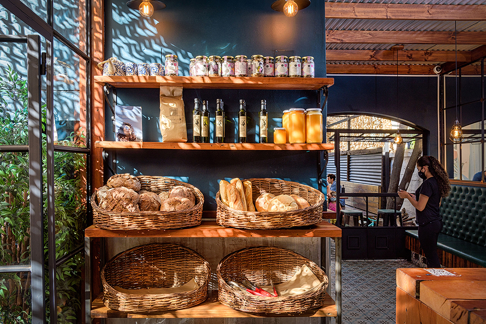

Nuestra Filosofía y Funcionamiento
En nuestra Cafetería Ecológica, creemos en la importancia de la sostenibilidad y el respeto por el medio ambiente. Trabajamos con productores locales que utilizan prácticas agrícolas regenerativas para garantizar la calidad y el cuidado del planeta.
Nuestro funcionamiento se basa en minimizar el impacto ambiental mediante el uso de materiales biodegradables, reciclaje y reducción de desperdicios. Además, ofrecemos talleres y eventos para educar a nuestra comunidad sobre hábitos ecológicos y saludables.
Cada taza de café que servimos es el resultado de un proceso cuidadoso que respeta la naturaleza y promueve un estilo de vida consciente.
